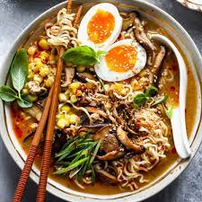

Ramen

The beauty of ramen is that it's basically a blank canvas for crafting your own custom
From the vegetables and protein to the toppings, think of the broth as your base for you to
build upon.
As long as you add plenty of toppings suitable to your liking, you're in for a highly
satisfying soup experience.
- Rice Vinegar
- Miso Paste
- Protein
- Garlic
- Chilli Oil
- Ginger
- Shallots
- Broth
- Soy Sauce
- Mushrooms
- corn
- Noodles
- Cook protein: Heat a stock pot or Dutch oven over medium heat. Once hot,
lightly grease and add your protein of choice. Cook for 4 to 5 minutes,
using a wooden spoon to break meat into small pieces. Transfer meat to a bowl and set aside.
- Saute mushrooms and aromatics: Add 2 Tbsp. neutral cooking oil to pan, along with mushrooms.
Cook 5 minutes, until golden and tender. Stir in shallots, garlic, and ginger;
cook 3 more minutes, until aromatic.
- Simmer broth: Stir in miso paste, soy sauce, rice vinegar, and hot chili oil.
Add broth and bring mixture
to a low boil. Lower heat and very gently simmer over medium-low for 20 minutes.
- Boil noodles: Bring broth back to a low boil, and add noodles. Cook for 3 minutes, or as
long as package instructs, until al dente. Stir in cooked meat, corn, and scallions.
Serve with toppings of choice.